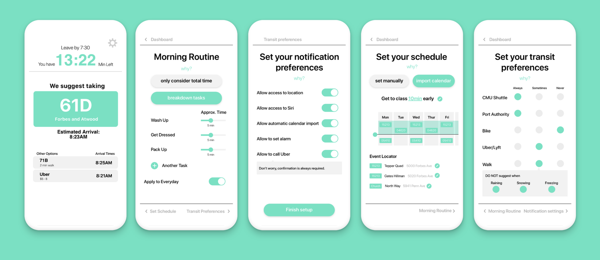
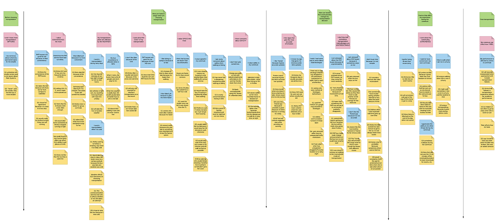
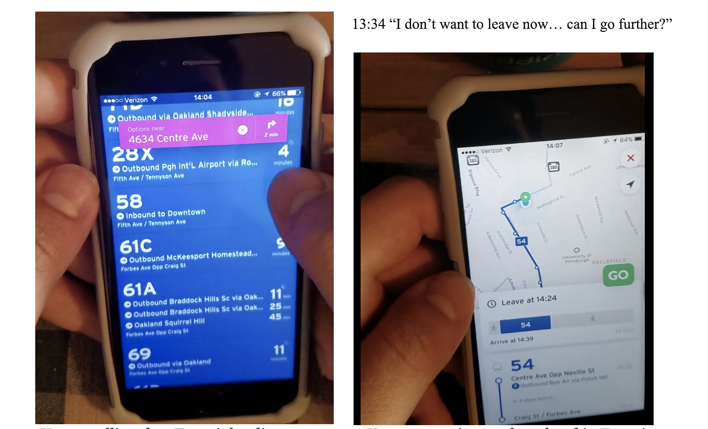
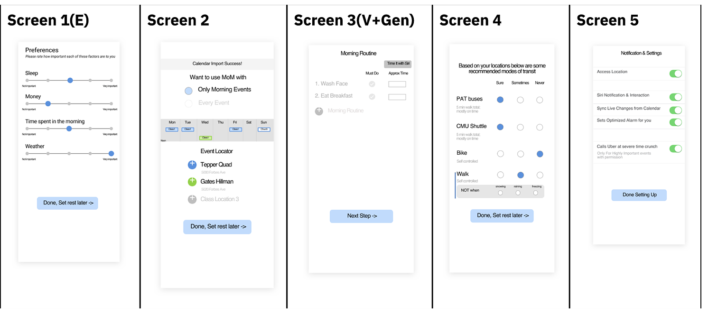
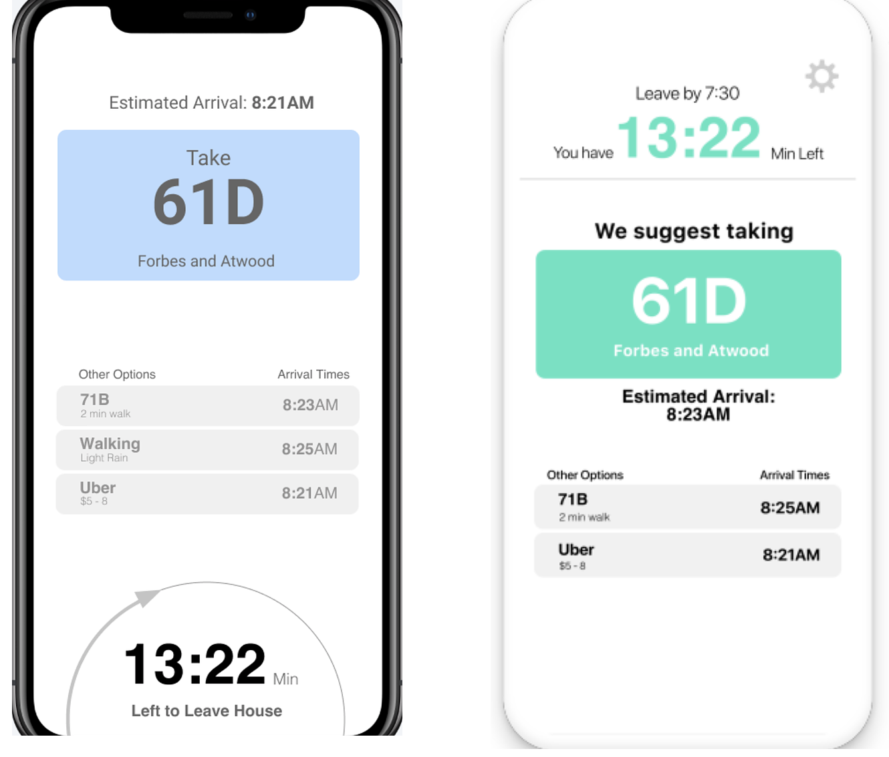

User-Centered Research & Evaluation:
OnTime
In this project, I worked on a team of 4 individuals to perform user-centered research methods and develop a design artifact to improve the transportation solutions that currently exist on CMU campus. I planned and employed various design methods as a team member, such as contextual inquiry, think-aloud protocols, affinity diagramming, stakeholder diagramming, 5-second tests, and desirability studies. I also helped in creating the design artifact, using Balsamiq & Sketch. Our solution, an application named OnTime, fulfills student's needs of having access to reliable transportation information, graphics that encourage time management skills, and the ability to express preference in their transportation methods when they go to campus in the morning.

Methodologies
Contextual Inquiry
5-Second Test
Storyboarding
Think-Aloud Protocols Text-based Diary Studies Speed Dating
Think-Aloud Protocols Text-based Diary Studies Speed Dating
Software used
As part of the course User-Centered Research & Evaluation, a course taught in the Human Computer Interaction department, we were assigned to better the transportation experience of CMU students by narrowing into a focus/problem, performing various explorational then evaluative research methods, and creating a design artifact (whether it be a physical object, high-fidelity wireframes, etc.)
The problem area that was provided to us by the Graduate Student Assembly was how to improve transportation that students experience while attending CMU. After organizing previous design ideas through an effort vs. value axis, we arrived at the focus of bettering the experience of students who are habitually late to campus (with the hopes of preventing their lateness). We then chose research methods through a methods selection table (seen at right, a helpful tool in planning how to answer research questions after defining a focus) from this population of students, which could then lead to design decisions later in our process.
Methods Selection Table (sample):
After we had defined our focus, we performed the following explorational research methods: contextual inquiry, affinity diagramming, diary study, think-aloud protocol, and speed-dating. I will only discuss the methods that I was involved in, but I am knowledgeable of the other methods that occurred on our team.
Explorational Methods
For our contextual inquiry, I interviewed a graduate student that regularly ran late to her morning class, which occurred at 9:30 AM. After creating an interview protocol, I performed the interview while taking the bus with her to this morning class. Some of the most important insights we gathered from this interview was that students who live off campus have a hard time finding a credible transportation apps that give accurate bus arrival times, and that being late can cause academic stress (especially when you are rushing to a test).
After the contextual inquiry, as a team, we created an affinity diagram to organize our insights from the two students we interviewed. First, we performed an interpretation session, in which we created two spreadsheets for each student, filled each with insights from the interview. Then, we embarked on the process of grouping insights together in order to see the bigger picture of how students choose transportation methods when they are in a rush.
Affinity Diagram:


Affinity diagram
We then created a think-aloud protocol, with the purpose of finding how students use existing solutions (such as the apps Transit, Lyft) to get to campus when they are headed to class in the morning. After creating the protocol in our team and then performing the protocol with a different graduate student, I created a usability aspect report (UAR) to summarize the critical incidents that occurred over the study. From this UAR, we generally found that the current solutions of Transit and Lyft are not adequate in allowing students to plan ahead (these solutions don't promote time management), and that Transit does not provide the ability to customize which busses you see on the landing screen (which can be important when you are in a rush).

User scrolling through Transit landing screen, and attempting to plan ahead in Transit, accompanied with quote from Usability Aspect Report.
After we performed explorational research methods, we then started creating design artifacts that reflected what we had learned from previous research. Because we were now making instead of just observing, we embarked in evaluative research methods that gave us feedback on how well we understood the problem based on the design artifacts we presented. Some of these methods include: speed-dating, "walking the wall," desirability study, 5-second test, and a think aloud protocol. In the midst of these, we were modifying our design artifact to reflect the research that was currently being done. I'll show the artifacts pre and post method, which will exemplify our thought process.
We started off with many components to our design artifact, but we narrowed down to two over the course of these research methods: a dashboard, and a set of customization screens. The dashboard would give the user a concise recommendation for transit, as well as help with time management, and the customization screens would allow users to personalize the recommendations our solution would provide.
Evaluative Research Methods:
In our desirability study, we wanted to find out the emotional responses that our customization section of our solution would evoke. Because our prototype is essentially a survey, we wanted to understand if it was too many questions, too little, or something else we could modify. After doing this test on 5 individuals, we found that this design method wasn't exactly appropriate for our stage of research. We did get helpful design feedback, but users were not very emotionally affected by our artifact. The feedback that was helpful included clarifying confusing questions that we asked, as well as ridding redundancies.
Pre-Desirability Study
We started off with many components to our design artifact, but we narrowed down to two over the course of these research methods: a dashboard, and a set of customization screens. The dashboard would give the user a concise recommendation for transit, as well as help with time management, and the customization screens would allow users to personalize the recommendations our solution would provide.
Evaluative Research Methods:
In our desirability study, we wanted to find out the emotional responses that our customization section of our solution would evoke. Because our prototype is essentially a survey, we wanted to understand if it was too many questions, too little, or something else we could modify. After doing this test on 5 individuals, we found that this design method wasn't exactly appropriate for our stage of research. We did get helpful design feedback, but users were not very emotionally affected by our artifact. The feedback that was helpful included clarifying confusing questions that we asked, as well as ridding redundancies.
Pre-Desirability Study

Post-Desirability Study

After our desirability study, we performed a 5-second test, as well as a think-aloud (in which we iterated on our design artifact in between the tests).
For the 5-second test, we wanted to test the dashboard screen of our solution in particular, which would tell the user which transportation method to take, as well as how much time they had left to leave. After doing 10 tests, we received valuable, specific feedback, including that our dashboard confused users about when they had to leave (there was no "time you need to leave," there was only a countdown). We adjusted our screens, and then moved on to our next method.
Pre vs. Post 5 Second Test

In our final method, we created a short think-aloud protocol to find if users could understand how our customization screens worked, and if they understood how their answers to the questions we asked affected the dashboard they would see. With an interactive prototype, we tested 2 users, and created a UAR. From this UAR, we found that the navigation through these screens was confusing. After making changes according to this method, we were ready to submit!
Solution
In addition to our design artifact, we also participated in a poster presentation with our classmates and clients, in which we gave an elevator pitch as well as fielded questions about our work.
Write-Up:
In Conclusion:
In this project, we selected and employed design methods that none of us had previous experience with. We all learned by doing, and failed more than a few times. But, after our failures, we learned from our mistakes, and solidified our understanding of the problem, and more generally, how we could best use a design method to best gain insights about users in a specific problem stage or context. I also learned more of how to be a teammate: how to communicate, how to give meaningful, constructive criticism, and how to take it (criticism). We ended up with something that our professors were proud of, as well as us. I can't wait to employ these mindsets and methods to my future studies, and continue a path of learning with it.